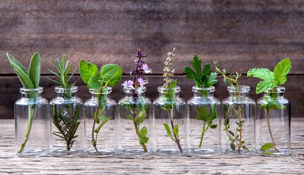

Boutures de plantes

Qu'est-ce que c'est ?
Le bouturage consiste à créer une plante entière, à partir d'un fragment de plante prélevé sur la plante mère. Il consiste à provoquer l'enracinement d'un fragment de tige, de feuille ou de racine.
Étapes
Le plus simple
- Coupez un rameau feuillé non fleuri long de 10 cm.
- Supprimez les feuilles inférieures, coupez en deux les feuilles supérieures restantes si elles sont grandes ou laissez-les intactes si elles sont de petite taille.
- La ou les feuille(s) restante(s) sert à poursuivre l'activité biologique de la plante.
- Aidez au bouturage, trempez le rameau sur 2 cm dans une poudre d'hormone de bouturage.
Le bouturage par feuille
- Aidez au bouturage, trempez le rameau sur 2 cm dans une poudre d'hormone de bouturage.
Le bouturage par racines
- Difficile a realiser, est reserve aux professionnels